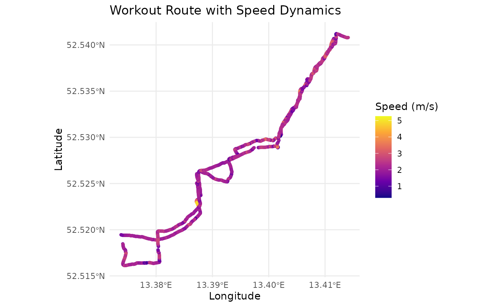
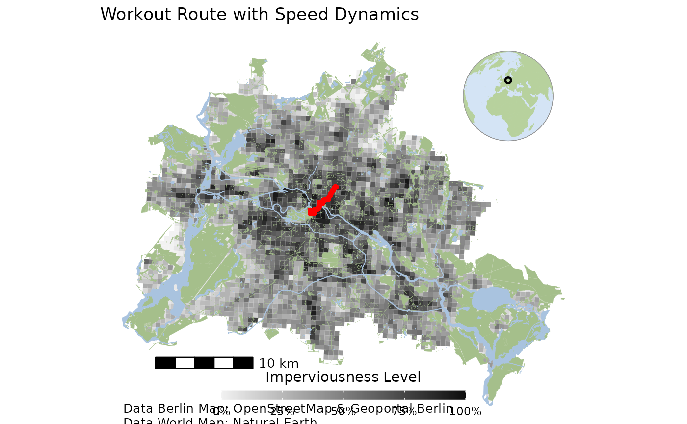

Plotting Workouts
A final function family allows user to analyse and visualise workout
data after parsing them from the respective gpx format
provided by apple.
We first load the list of all workouts which we previously parsed in
vignette("01_import_apple_data") and pick one specific
workout:
workout_data <- parsed_workouts$`Route 2023-10-08 12:35pm`
sf_data <- workout_data %>%
st_as_sf(coords = c("lon", "lat"), crs = 4326) %>%
st_transform(crs = 3857) # Using Web Mercator for visualizationTo not leak any specific protected location, such as one’s home, we
create a function that removes the first and last x minutes
of a workout:
remove_start_end <- function(sf_data, minutes) {
# Convert 'minutes' to seconds since the 'time' column is in POSIXct
seconds <- minutes * 60
# Get the start and end time
start_time <- min(sf_data$time)
end_time <- max(sf_data$time)
# Calculate the time limits
start_limit <- start_time + seconds
end_limit <- end_time - seconds
# Filter the data to exclude points within the first and last x minutes
sf_data_filtered <- sf_data %>%
filter(time > start_limit & time < end_limit)
return(sf_data_filtered)
}
sf_data_obscured <- remove_start_end(sf_data, minutes = 5)We can then plot the workout and the respective velocity:
ggplot(data = sf_data_obscured) +
geom_sf(aes(color = speed), size = 1, alpha = 0.7) +
scale_color_viridis_c(name = "Speed (m/s)",
option = "C",
limits = range(sf_data$speed, na.rm = TRUE)) +
theme_minimal() +
labs(title = "Workout Route with Speed Dynamics",
x = "Longitude",
y = "Latitude") +
theme(legend.position = "right")
To plot the workout against a real city map of Berlin, we use the
d6berlin package:
#devtools::install_github("EcoDynIZW/d6berlin")
library(d6berlin)
base_map <- base_map_imp(color_intensity = 1, resolution = 500, globe = TRUE)
# Combine the base map with your data
berlin_map <-
base_map +
geom_sf(data = sf_data_obscured, aes(color = speed), col = "red",size = 1, alpha = 0.7) +
labs(title = "Workout Route with Speed Dynamics")+
guides(color = FALSE)
# Print the combined map
print(berlin_map)